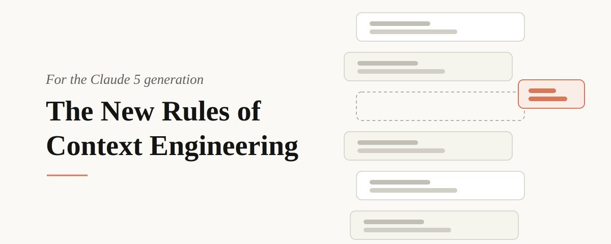

The new rules of context engineering for Claude 5 models
给 Claude 5 松绑：删掉 80% 也能不掉分
先看这五句
- Prompt 只是上下文的一小块。系统提示、Skills、CLAUDE.md、memory 拼出来的那一层，才叫 context engineering。
- 给 Opus 5 / Fable 5 删了 80% 以上的 Claude Code 系统提示，编码评测没有可测损失。
- 旧规则在绑住新模型。规则 → 判断；例子 → 接口；一次性堆齐 → 渐进披露；重复叮嘱 → 写进工具描述；手写记忆 → 自动记忆；简单 spec → 富引用。
- 冲突指令在逼它多想一轮。「适当留文档」和「不要加注释」同时出现时，模型能读懂意图，但要先解开打架。
- 用
/doctor给 Skills 和 CLAUDE.md 瘦身。把这些实践收进了 claude doctor。

这是一份阅读笔记，不是原文转载。Thariq 说：发给 Claude 的那句话只是窗口里的一小块。上下文要跨很多请求复用，不能写得像一次性 prompt。模型变强之后，旧的「最佳实践」有一批已经在帮倒忙。
Then and now
内部转录里常见打架：「适当留文档」和系统提示里的「不要加注释」。旧模型需要强护栏躲开最坏情况（乱删文件、乱写长注释）；新模型有判断，可以删掉许多曾经必要的约束，让它看周围代码自己决定。
| 以前 | 现在 |
|---|---|
| 给规则（默认不写注释、除非要求否则不写分析文档） | 给判断：读周围代码，匹配注释密度、命名和习惯 |
| 给工具例子 | 设计接口。例子会把探索空间收窄；枚举和「同时只许一个 in_progress」已经在暗示用法 |
| 全部堆在前面 | 渐进披露。验证和 code review 挪进可选用的 Skills；工具可 defer_loading，经 ToolSearch 再展开 |
| 重复叮嘱（旧模型对窗口末尾更听话） | 用法写进工具描述，系统提示里的重复例子删掉 |
用 # 往 CLAUDE.md 记记忆 | 自动记忆，按工作和你来存 |
| 简单 markdown spec | 富引用：HTML artifacts、测试套件、另一份代码、量尺；量尺可配 Dynamic Workflows 拉起验证 agent |
CLAUDE.md 不再是唯一的记忆和指南入口。现在有 memory、artifacts、skills，模型可以自己发明跨会话装载上下文的办法。
怎么落到你的上下文
- System prompt 绑的是产品身份。用 Claude Code 几乎不用改；自己做 harness 才该花时间在这里。
- CLAUDE.md 保持轻：仓库是干什么的，其余 token 花在仓库里的 gotchas。文件系统能看出来的别写。验证细则做成 Skill，再从 CLAUDE.md 指过去。
- Skills 是让它在需要时找到信息的轻指南。除了真正关键的地方，避免过度约束；长 Skill 拆文件。
- References 用
@挂上。优先代码形态的引用：HTML 稿通常比一段描述或截图更能把设计说清楚。
作者把瘦身收进 claude doctor / /doctor。更细的新模型提示，指向 Fable field guide。